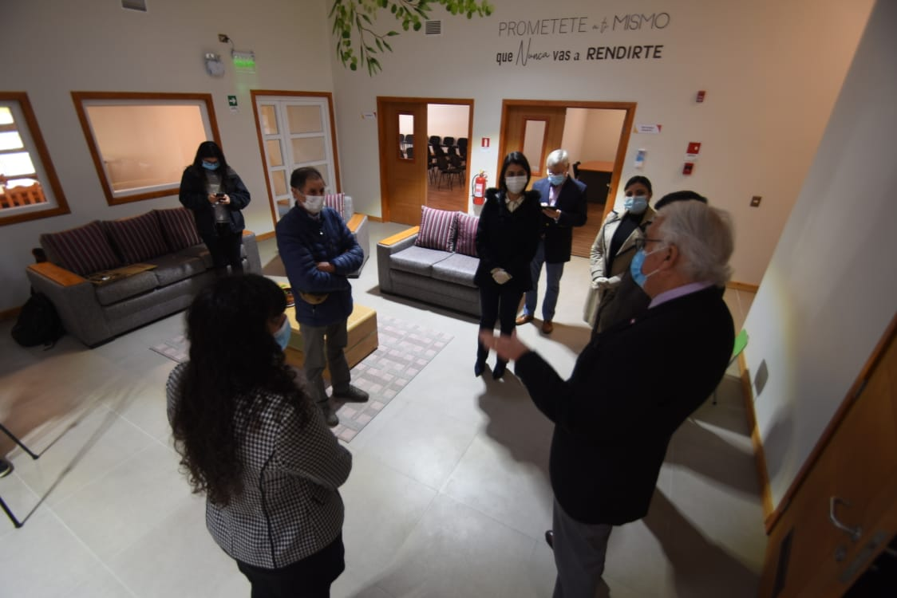

27 de Octubre, 2020
Intendente Harry Jürgensen destaca la labor del Centro
Autoridades regionales reconocen el aporte del Centro Clínico Comunitario al fortalecimiento de la red de salud mental y rehabilitación en la región.
Leer más